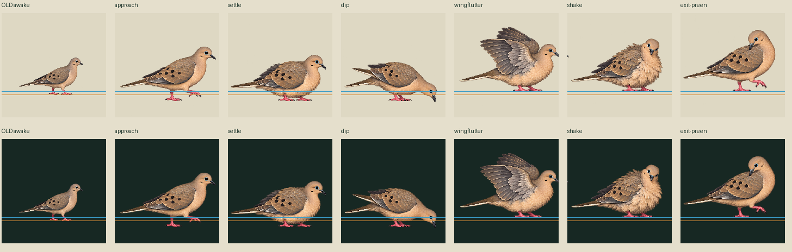
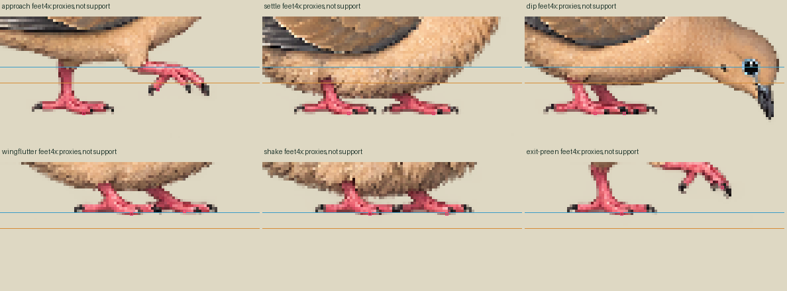

Six genuine new drawings, zero accepted bathing slots. Bird width grew from118 to169–182 world pixels. Flutter clips into the next raw cell; shake retains that foreign fragment. Source pixels are unchanged.
Loading
30Hz authored pose clock:135ticks /4.5s. Root trajectory stays[0,0]; no invented walking or planted-foot slide. One shot ends on exact old awake. Approach and exit are posture keys only. The final requested preen is not visibly delivered; its event remains unsupported.
Orange=image ground150; blue=water144; magenta=image pivot105,150. Green=pixel inspection proxies; yellow=bill region. These are diagnostics, not accepted contact geometry. Dip bill sample is19world below the proposed water plane. All six new contact arrays are empty. geometryReviewed=false; supportWorld=null.
Bath furniture geometry and accepted event schema remain unavailable. Event names/timing are authored proposals; no physical event is emitted. Current atlas fails decoded-area, binary-alpha and64-color compact-runtime limits. No app/runtime admission is claimed.
RGBA one-shot APNG · Light/dark GIF · Exact source identities · Timing/event proposal


External reference text informed shallow-water/preening context only. No licensed photo or footage pixels were used. Exact generated reference lineage, submitted prompt and native output are retained. Source rights remain unreviewed.